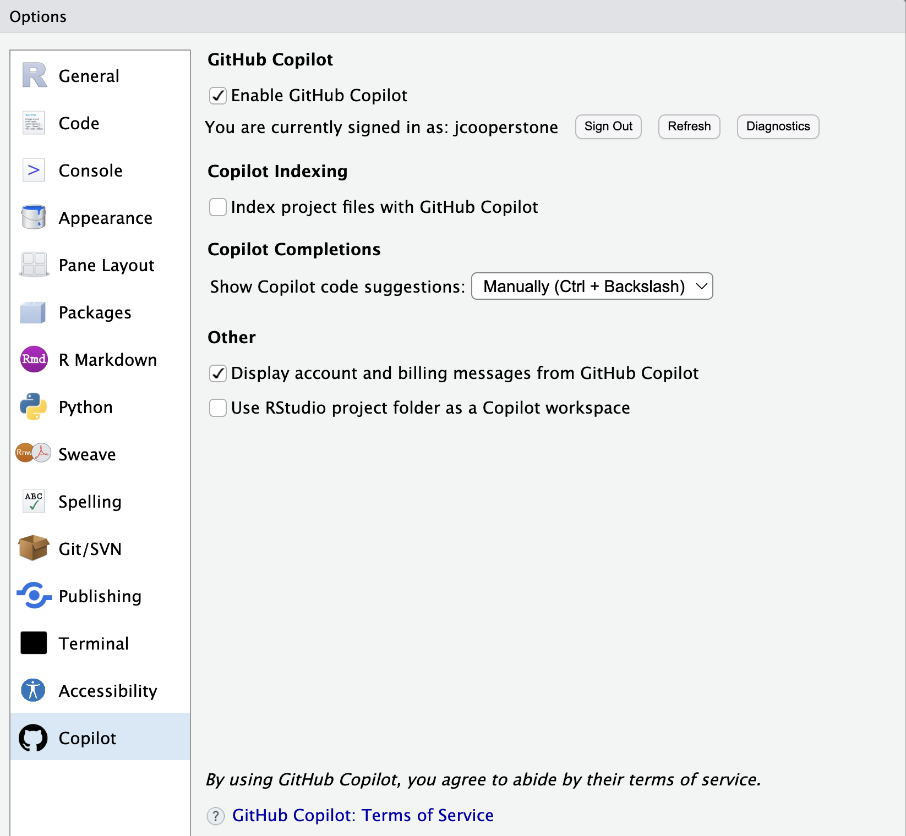

# q: how do i calculate the mean of a column in a data frame?
# a: mean(mtcars$mpg) Data wrangling with GitHub Copilot - I
r-basics
tidyverse
github-copilot
gen-ai
1 Introduction
We are going to spend the next handful of Code Club sessions learning how to code with the help of generative AI. We have decided to structure these lessons by providing you a little bit of context about some functions that can be used to achieve a task, and then will spend the next session playing around with these functions using GitHub Copilot which can be integrated into RStudio.
Existing and soon-to-come generative AI tools are powerful but when you don’t need to generate the code, its easy to get results that are not intended. We want to help provide you some tools to enable you to use these new tools but not accidentally lose a finger.
2 Ways to use generative AI for coding in R
Here are some common ways to use generative AI for coding assistance in R (this list is not exhaustive):
- GitHub Copilot through the RStudio IDE
- ChatGPT through an package like
chattr- a package developed and maintained by Posit (the company that makes RStudio). You will need your OpenAI API key to do this. - Using a generative AI agent in your browser while you code - this method could be paired with Microsoft Copilot using your OSU credentials to be compliance with OSU data handling.
Know what type of data you are using before enabling Copilot in RStudio
Using a generative AI agent can have broad implications for you. There may be instances where this is strictly unallowable. I encourage you to have a conversation with your supervisor/instructor/responsibile party about what implications there might be for use of AI with your work.
We are going to get started by using GitHub Copilot which is integrated into the RStudio IDE.
3 Getting started with GitHub Copilot
3.1 Create a GitHub account
In order to use GitHub Copilot, you must have a GitHub account.
Create a GitHub account by going to github.com/join.
- You will have to link to an email address. You can use your OSU email or a personal one, it doesn’t matter.
- You will have to pick a username. Some advice for picking a username:
- Incorporate your actual name - it’s useful for seeing who you are
- Pick a username you’d be comfortable with an employer seeing
- Shorter is better
- Recommend to use all lower case letters
- Your username can be changed but its annoying so try and get it right the first time
Tip
You can sign up for GitHub education with your OSU email by confirming your status as a student GitHub Education page.
You have access to Copilot free with your GitHub account.
3.2 Enable GitHub Copilot in RStudio
Now we will enable GitHub Copilot in RStudio. We can do that by navigating to Tools > Global Options > Copilot. Click “Enable Copilot”, sign into GitHub, and use the verification code provided.
Note
RStudio Desktop 2023.09.0 or higher is required. You will need internet to access the API.

You can see above I also have not “Index project files with GitHub Copilot”. I have done this because I don’t want all my files in this Rproject to be read by Copilot. For code club, it would probably be ok to index, but I would not check this for my research.
3.2.1 Autocomplete vs. Copilot
3.3 Try but verify
Posit (the company that makes RStudio) recommends a “trust but verify” approach. They say specifically:
“While Copilot often generates useful and functional code, it is important to note that the suggestions are not always valid code examples or completely solve the intended problem. Copilot suggestions are non-deterministic and Posit does not guarantee the quality, accuracy, or security of the outputs. It is important to review the suggestions and ensure that they are both accurate and appropriate for the intended use case. Copilot may generate code that contains insecure coding patterns, bugs, or outdated practices. You should always use best practices in code review, testing, and adherence to security standards when using Copilot. For more information, see the FAQs on GitHub Copilot and GitHub Copilot for Business.”
I might recommend instead a “try but verify” approach - where you utilize Copilot but do your due diligence to check each thing it does to ensure you are getting your intended outcome. In the end, if you are using something to complete your work, you need to be able to stand behind it.
3.4 Asking questions
By using comments in a chunk, you can ask questions to Copilot.
Tip
Remember that if you have Copilot set to give you suggestions manually, you’ll need to click Ctrl or Cmd + \ to get a response.
3.6 Other things to discuss
AI and destroying the environment - my recommendation is to turn Copilot on only when you want to use it
3.5 Comments
You can also prompt Copilot for help by describing in comments what you want to do.